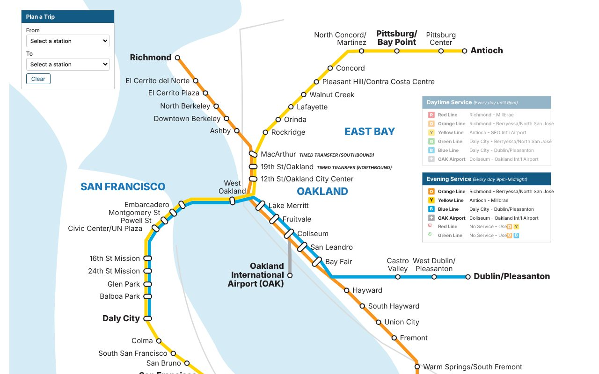
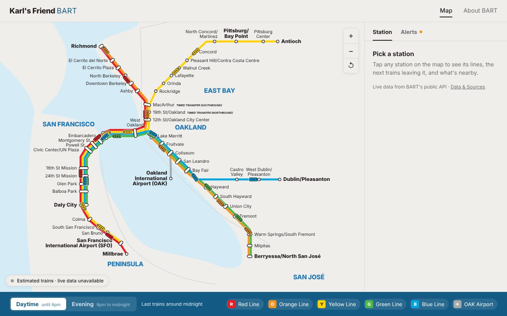

Oct 2026
Karl's Friend Bart
Problem statement
A BART rider who feels confused about the map needs to see where their train is actually going, but the official map is a still picture of every line at once.
How It Went
-
Oct 24Research
Same Map, All Day
BART's map shows every line at once, all day. After 9pm the Red and Green lines stop running, and the map still shows them.
Even if you grew up on BART, you still have to stop and decode it. The map isn't wrong. It just doesn't move.
-
Oct 24Design
Fogline
My first version was a dark custom map I called Fogline. It looked good. It also didn't look like BART at all, and BART's map is the one people already know how to read.

It looked good, but it didn't look like BART, and BART's map is the one people already know how to read. -
Oct 24Design
Back to the Official Map
So I rebuilt the official one. Same colors, same layout. Then I added a trip planner and the screen got crowded fast.

Back to the real colors and layout. The trip planner made the screen crowded. -
Oct 24Product
Cut the Trip Planner
Google Maps already plans trips. Mine was just more stuff on the screen, so it went. The line controls moved to a bar at the bottom, where your thumb already is.

Google Maps already plans trips, so mine went. Line controls sit at the bottom, where your thumb is. -
Oct 28Tech
Live Trains and Evening Service
Little trains move along the map using BART's live departures. At 9pm the site switches to evening service on its own, goes dark, and marks Red and Green as off tonight.

Day: little trains move on BART's live departures. 
After 9pm: evening service on its own, with Red and Green marked off tonight.
How It Changed
FoglineMy own dark map. It didn't look like BART. The Official MapFamiliar again, but the trip planner crowded it. Bottom BarTrip planner cut. Controls moved under your thumb. Live TrainsLive departures, plus evening service after 9pm.
Looking Back
- What worked
- The design. It's a little more polished than BART's original site.
- What I'd do differently
- Talk to the people who ride it every day, especially first-timers, older riders and people who don't use much tech, and ask where the map lets them down.
- What's next
- Get it in front of people at BART, ask what they think is missing, and see if there's room to collaborate, even as a part-time contractor on the site.